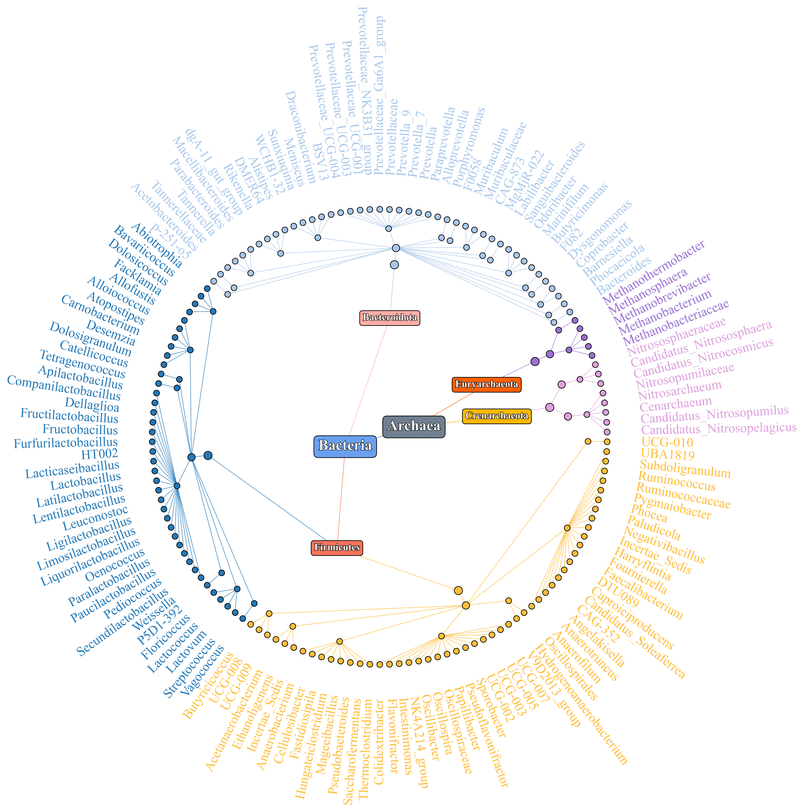
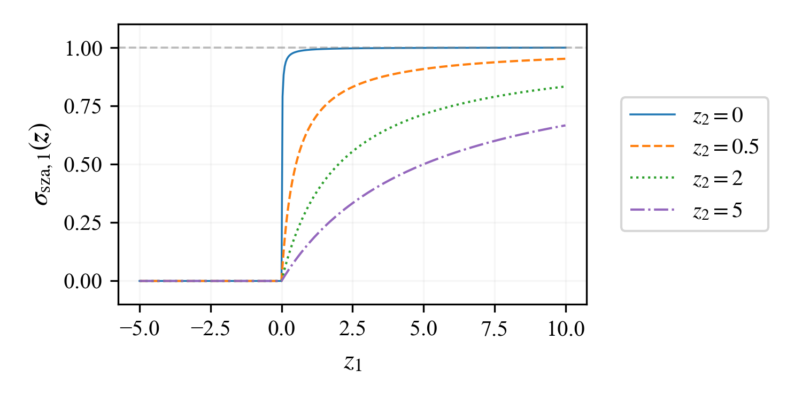
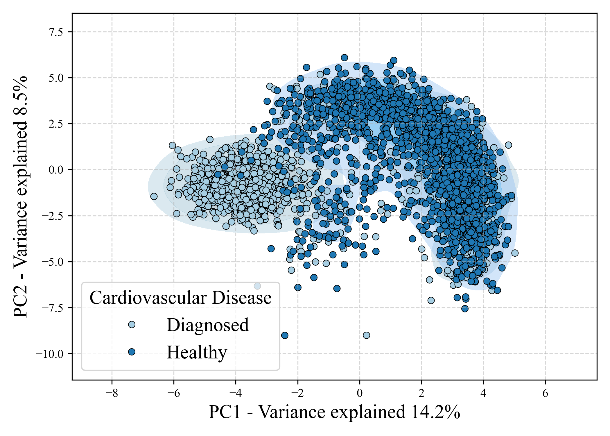
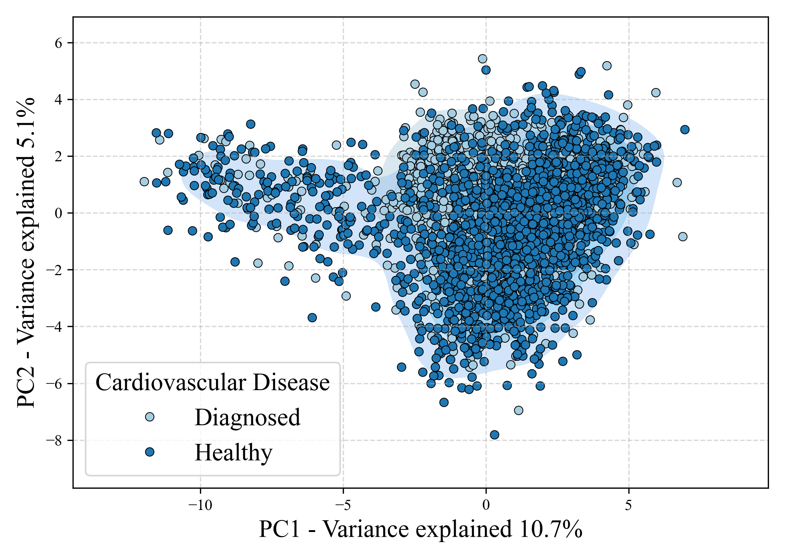
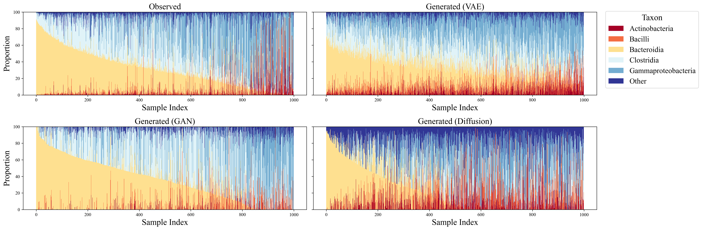

We introduce Simplex-Zero Activation (SZA) Function, a novel operator designed to produce outputs that are simultaneously non-negative, compositional (sum-to-one), and sparse. By also maintaining Lipschitz continuity, our function ensures stable and efficient training. This approach directly contrasts with traditional pre-processing transformations, which introduce geometric distortions and irreversibly destroy the data's natural sparsity.
Contribution 1: Tree-informed CNN
Hierarchical Tree Structure
Our approach first addresses the data's inherent tree structure to exploit hierarchical feature correlations. We permute the input vector using a Depth-First Search of the tree, which places related features in proximity. This allows a subsequent CNN to effectively process the data as spatially structured, enabling it to learn salient, low-dimensional representations.
Contribution 2: Simplex-Zero Activation Function
SZA Function
Contribution 3: Generative Models for Sparse Compositional Data
Our method seamlessly integrates with existing generative modeling frameworks to enable the direct generation of sparse compositional data. This approach yields a 4x speedup over complex manifold-specific models while improving generation quality by 81% against traditional transformation-based baselines.
Flow Matching: Direct flow in the vector field towards target probability simplex


Denoising Diffusion Model: Diffusion with efficient projection on the probability simplex


Variational AutoEncoder: Enhanced Classification in Representation Space
Principal Component Analysis over Latent Representations (SZA)
Principal Component Analysis over Latent Representations (CLR)
High-Fidelity Generation
Stacked-Bar Plot of Compositional Data
